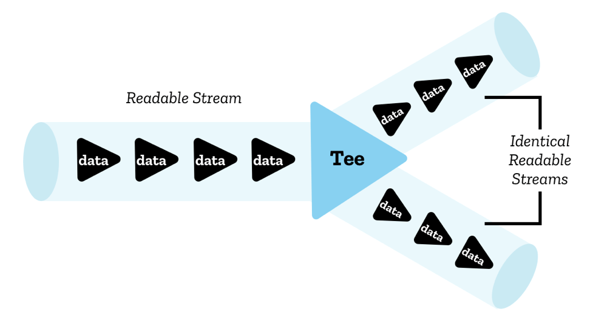

Insertable Stream¶
Abstract |
WebRTC Insertable Stream |
Authors |
Walter Fan |
Status |
WIP |
Updated |
2021-10-11 |
Overview¶
It is new WebRTC API manipulating the bits on MediaStreamTracks being sent via an RTCPeerConnection.
Problem to be solved¶
We need an API for processing media that:
Allows the processing to be specified by the user, not the browser
Allows the processed data to be handled by the browser as if it came through the normal pipeline
Allows the use of techniques like WASM to achieve effective processing
Allows the use of techniques like Workers to avoid blocking on the main thread
Does not negatively impact security or privacy of current communications
Stream API¶
The Streams Standard provides a common set of APIs for creating and interfacing with such streaming data, embodied in readable streams, writable streams, and transform streams.
These APIs have been designed to efficiently map to low-level I/O primitives, including specializations for byte streams where appropriate.
They allow easy composition of multiple streams into pipe chains, or can be used directly via readers and writers. Finally, they are designed to automatically provide backpressure and queuing.
Read Streams API Concepts to understand the basic concepts
Use cases¶
Video effects: piping a readable video stream through a transform stream that applies effects in real time.
Decompression: piping a file stream through a transform stream that selectively decompresses files from a .tgz archive, turning them into img elements as the user scrolls through an image gallery.
Image decoding: piping an HTTP response stream through a transform stream that decodes bytes into bitmap data, and then through another transform that translates bitmaps into PNGs.
Model¶
A chunk is a single piece of data that is written to or read from a stream. It can be of any type; streams can even contain chunks of different types.
A chunk will often not be the most atomic unit of data for a given stream; for example a byte stream might contain chunks consisting of 16 KiB Uint8Arrays, instead of single bytes.
ReadableStream¶
A readable stream is a data source represented in JavaScript by a ReadableStream object that flows from an underlying source — this is a resource somewhere on the network or elsewhere on your domain that you want to get data from.
There are two types of underlying source:
Push sources constantly push data at you when you’ve accessed them, and it is up to you to start, pause, or cancel access to the stream. Examples include video streams and TCP/Web sockets.
Pull sources require you to explicitly request data from them once connected to. Examples include a file access operation via a Fetch or XHR call.
const stream = new ReadableStream({
start(controller) {
},
pull(controller) {
},
cancel() {
},
type,
autoAllocateChunkSize
},
{
highWaterMark,
size()
}
);
WritableStream¶
A writable stream is a destination into which you can write data, represented in JavaScript by a WritableStream object. This serves as an abstraction over the top of an underlying sink — a lower-level I/O sink into which raw data is written.

const stream = new WritableStream({
start(controller) {
},
write(chunk,controller) {
},
close(controller) {
},
abort(reason) {
}
},
{
highWaterMark,
size()
}
);
Pipe chains¶
The Streams API makes it possible to pipe streams into one another (or at least it will do when browsers implement the relevant functionality) using a structure called a pipe chain

Insertable Streams API¶
It uses an additional API on RTCRtpSender and RTCRtpReceiver to insert the processing into the pipeline.
// New dictionary
dictionary RTCInsertableStreams {
ReadableStream readable;
WritableStream writable;
};
typedef (SFrameTransform or RTCRtpScriptTransform) RTCRtpTransform;
// New methods for RTCRtpSender and RTCRtpReceiver
partial interface RTCRtpSender {
attribute RTCRtpTransform? transform;
};
partial interface RTCRtpReceiver {
attribute RTCRtpTransform? transform;
};
由上面的定义可知， RTCRtpTransform 有两种实现 SFrameTransform 和 RTCRtpScriptTransform
SFrameTransform¶
接口定义如下
enum SFrameTransformRole {
"encrypt",
"decrypt"
};
dictionary SFrameTransformOptions {
SFrameTransformRole role = "encrypt";
};
typedef [EnforceRange] unsigned long long SmallCryptoKeyID;
typedef (SmallCryptoKeyID or bigint) CryptoKeyID;
[Exposed=(Window,DedicatedWorker)]
interface SFrameTransform {
constructor(optional SFrameTransformOptions options = {});
Promise<undefined> setEncryptionKey(CryptoKey key, optional CryptoKeyID keyID);
attribute EventHandler onerror;
};
SFrameTransform includes GenericTransformStream;
enum SFrameTransformErrorEventType {
"authentication",
"keyID",
"syntax"
};
[Exposed=(Window,DedicatedWorker)]
interface SFrameTransformErrorEvent : Event {
constructor(DOMString type, SFrameTransformErrorEventInit eventInitDict);
readonly attribute SFrameTransformErrorEventType errorType;
readonly attribute CryptoKeyID? keyID;
readonly attribute any frame;
};
dictionary SFrameTransformErrorEventInit : EventInit {
required SFrameTransformErrorEventType errorType;
required any frame;
CryptoKeyID? keyID;
};
RTCRtpScriptTransform¶
// New enum for video frame types. Will eventually re-use the equivalent defined
// by WebCodecs.
enum RTCEncodedVideoFrameType {
"empty",
"key",
"delta",
};
dictionary RTCEncodedVideoFrameMetadata {
long long frameId;
sequence<long long> dependencies;
unsigned short width;
unsigned short height;
long spatialIndex;
long temporalIndex;
long synchronizationSource;
sequence<long> contributingSources;
};
// New interfaces to define encoded video and audio frames. Will eventually
// re-use or extend the equivalent defined in WebCodecs.
[Exposed=(Window,DedicatedWorker)]
interface RTCEncodedVideoFrame {
readonly attribute RTCEncodedVideoFrameType type;
readonly attribute unsigned long long timestamp;
attribute ArrayBuffer data;
RTCEncodedVideoFrameMetadata getMetadata();
};
dictionary RTCEncodedAudioFrameMetadata {
long synchronizationSource;
sequence<long> contributingSources;
};
[Exposed=(Window,DedicatedWorker)]
interface RTCEncodedAudioFrame {
readonly attribute unsigned long long timestamp;
attribute ArrayBuffer data;
RTCEncodedAudioFrameMetadata getMetadata();
};
// New interfaces to expose JavaScript-based transforms.
[Exposed=DedicatedWorker]
interface RTCTransformEvent : Event {
readonly attribute RTCRtpScriptTransformer transformer;
};
partial interface DedicatedWorkerGlobalScope {
attribute EventHandler onrtctransform;
};
[Exposed=DedicatedWorker]
interface RTCRtpScriptTransformer {
readonly attribute ReadableStream readable;
readonly attribute WritableStream writable;
readonly attribute any options;
};
[Exposed=Window]
interface RTCRtpScriptTransform {
constructor(Worker worker, optional any options, optional sequence<object> transfer);
};
Use cases¶
True End-to-End Encryption with WebRTC Insertable Streams¶
搭建一个本地的 peer connection, video1 元素放置本地获取的 stream, video2 元素放置从远程获取的 stream
这里也放置了一个 videoMonitor 元素来模拟为中间人 middlebox, 它从 peer connection 中拿到媒体流，不经 decode 而直接播放。
大致流程为:
localStream(video1) --> 加密 --> peerConnection --> 解密 --> video2(remoteStream)
|
v
videoMonitor(未解密的)
从 RTCPeerConnection 中获取 RTCRtpSender 和 RTCRtpReceiver
explain: https://webrtchacks.com/true-end-to-end-encryption-with-webrtc-insertable-streams/
codes: https://github.com/webrtc/samples/tree/gh-pages/src/content/insertable-streams/endtoend-encryption

const sender = pc1.addTrack(stream.getVideoTracks()[0], stream);
const senderStreams = sender.createEncodedVideoStreams() :
const senderTransformStream = new TransformStream({
transform: (chunk, controller) {
//这里可以做加密
console.log(chunk, chunk.data.byteLength);
controller.enqueue(chunk);
}
});
senderStreams.readableStream
.pipeThrough(senderTransformStream)
.pipeTo(senderStreams.writableStream);
WebRTC example: https://webrtc.github.io/samples/src/content/insertable-streams/endtoend-encryption/
const worker = new Worker('./js/worker.js', {name: 'E2EE worker'});
function setupSenderTransform(sender) {
const senderStreams = sender.createEncodedStreams();
const {readable, writable} = senderStreams;
worker.postMessage({
operation: 'encode',
readable,
writable,
}, [readable, writable]);
}
function setupReceiverTransform(receiver) {
const receiverStreams = receiver.createEncodedStreams();
const {readable, writable} = receiverStreams;
worker.postMessage({
operation: 'decode',
readable,
writable,
}, [readable, writable]);
}
check https://github.com/webrtc/samples/blob/gh-pages/src/content/insertable-streams/endtoend-encryption/js/worker.js for detail
onmessage = async (event) => {
const {operation} = event.data;
if (operation === 'encode') {
const {readable, writable} = event.data;
const transformStream = new TransformStream({
transform: encodeFunction,
});
//处理管道经由 transformStream 的 encodeFunction 做 encode
readable
.pipeThrough(transformStream)
.pipeTo(writable);
} else if (operation === 'decode') {
const {readable, writable} = event.data;
const transformStream = new TransformStream({
transform: decodeFunction,
});
//处理管道经由 transformStream 的 decodeFunction 做 decode
readable
.pipeThrough(transformStream)
.pipeTo(writable);
} else if (operation === 'setCryptoKey') {
if (event.data.currentCryptoKey !== currentCryptoKey) {
currentKeyIdentifier++;
}
currentCryptoKey = event.data.currentCryptoKey;
useCryptoOffset = event.data.useCryptoOffset;
}
};
encodeFunction
function encodeFunction(encodedFrame, controller) {
if (scount++ < 30) { // dump the first 30 packets.
dump(encodedFrame, 'send');
}
if (currentCryptoKey) {
const view = new DataView(encodedFrame.data);
// Any length that is needed can be used for the new buffer.
const newData = new ArrayBuffer(encodedFrame.data.byteLength + 5);
const newView = new DataView(newData);
const cryptoOffset = useCryptoOffset? frameTypeToCryptoOffset[encodedFrame.type] : 0;
for (let i = 0; i < cryptoOffset && i < encodedFrame.data.byteLength; ++i) {
newView.setInt8(i, view.getInt8(i));
}
// This is a bitwise xor of the key with the payload. This is not strong encryption, just a demo.
for (let i = cryptoOffset; i < encodedFrame.data.byteLength; ++i) {
const keyByte = currentCryptoKey.charCodeAt(i % currentCryptoKey.length);
newView.setInt8(i, view.getInt8(i) ^ keyByte);
}
// Append keyIdentifier.
newView.setUint8(encodedFrame.data.byteLength, currentKeyIdentifier % 0xff);
// Append checksum
newView.setUint32(encodedFrame.data.byteLength + 1, 0xDEADBEEF);
encodedFrame.data = newData;
}
controller.enqueue(encodedFrame);
}
decodeFunction
function decodeFunction(encodedFrame, controller) {
if (rcount++ < 30) { // dump the first 30 packets
dump(encodedFrame, 'recv');
}
const view = new DataView(encodedFrame.data);
const checksum = encodedFrame.data.byteLength > 4 ? view.getUint32(encodedFrame.data.byteLength - 4) : false;
if (currentCryptoKey) {
if (checksum !== 0xDEADBEEF) {
console.log('Corrupted frame received, checksum ' +
checksum.toString(16));
return; // This can happen when the key is set and there is an unencrypted frame in-flight.
}
const keyIdentifier = view.getUint8(encodedFrame.data.byteLength - 5);
if (keyIdentifier !== currentKeyIdentifier) {
console.log(`Key identifier mismatch, got ${keyIdentifier} expected ${currentKeyIdentifier}.`);
return;
}
const newData = new ArrayBuffer(encodedFrame.data.byteLength - 5);
const newView = new DataView(newData);
const cryptoOffset = useCryptoOffset? frameTypeToCryptoOffset[encodedFrame.type] : 0;
for (let i = 0; i < cryptoOffset; ++i) {
newView.setInt8(i, view.getInt8(i));
}
for (let i = cryptoOffset; i < encodedFrame.data.byteLength - 5; ++i) {
const keyByte = currentCryptoKey.charCodeAt(i % currentCryptoKey.length);
newView.setInt8(i, view.getInt8(i) ^ keyByte);
}
encodedFrame.data = newData;
} else if (checksum === 0xDEADBEEF) {
return; // encrypted in-flight frame but we already forgot about the key.
}
controller.enqueue(encodedFrame);
}